VOL. I · PLATE F · 06 / 09
THE GRAVE
From churchyard to cemetery, and the architecture of a name
The Russian grave is a legal object before it is a sacred one. Where the dead may lie has been decided by decrees, epidemics and municipal budgets at least as often as by custom.
1723–present · Moscow, St Petersburg, Pushkin, provincial Russia · Orthodox; state regulation; multi-confessional necropolises
F / 01
The decree of 1723
By a decree of Peter I dated 10 October 1723, burial in towns was restricted, with an exception for notable persons, because the churchyards at churches and monasteries had become overcrowded. Pravenc reports that the same decree ordered raised tombs levelled and relief images on shrines replaced with painted ones. A nineteenth-century account by N. P. Rozanov gives the decree this way: only ‘notable persons’ could be buried at churches in Moscow and other towns, and the rest were to go to monasteries and parish churches outside the town. He assigns the order to lower tombstones to ground level, with the inscriptions on top, to an earlier decree of 12 April 1722, and does not mention tombs or relief images in the 1723 text. One academic article dates the burial decree 16 October, not 10 October. The atlas keeps 10 October as Pravenc and Rozanov give it and treats the tombstone order as unsettled.
The measure did not last. Rozanov says the decree was not carried out because Peter died in January 1725, and that the old custom of burying at the parish churches stayed as it was under his successors. The change came in 1771, when plague struck Moscow. Rozanov names a Senate decree of 24 March 1771 that set aside special places outside the town for those who died of the disease, and one of 1 November 1771 ordering that burials at town churches stop and that cemeteries be laid out outside the towns. The article on Siberia dates a Senate decree of the same kind to 24 December 1771, and the atlas does not reconcile the dates. Vagankovo was founded in that year to receive the plague dead. The municipal note says the first burials there were unnamed Muscovites and gives no figure for the dead; popular accounts vary widely, and none is used here.
Ecclesiastical canon and folk practice converged strictly on the orientation of the grave (Belova and Levkievskaya 2004, pp. 263–265). Across Orthodox parishes, the body was laid on its back, head to the west and feet to the east, looking toward the east where Christ is expected to appear at the Second Coming. The placement of the cross varied: in general parish practice it was erected at the foot of the grave so that the rising dead could behold the crucifix and embrace it on the day of resurrection; among many Old Believer communities and in northern regions, it was set at the head to shelter the departed under the sign of the cross. Church legislation from the early eighteenth century (Holy Synod decrees of 1707, 1722 and 1723) repeatedly banned the erection of enclosed wooden miniature houses (domoviny) and roofed shrines over graves as pagan survivals, commanding simple flat crosses instead.
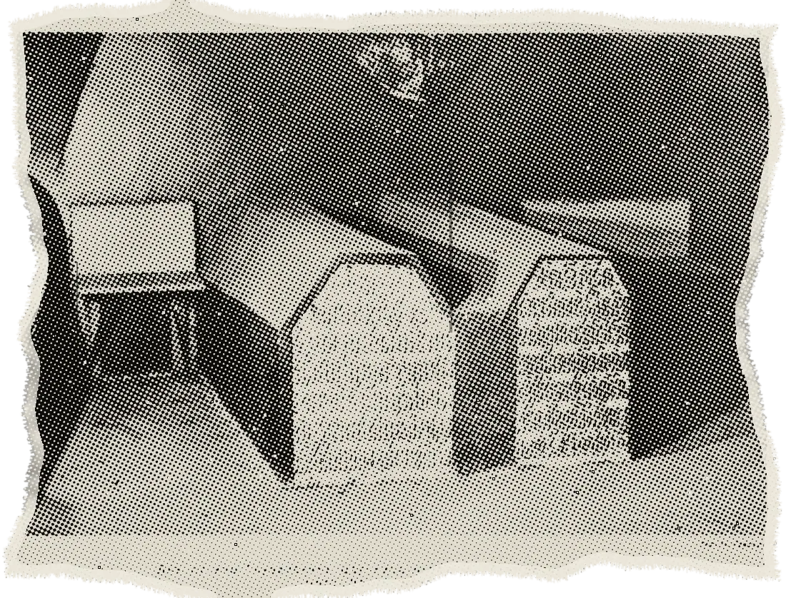
F / 02
Out of the town, 1771–72
Rozanov’s own wording for the Senate decree of 1 November 1771 is that burial at churches in towns should stop and that cemeteries be laid out outside the town on common grazing land, with small wooden churches built on them at first, at the town’s expense; places where plague victims were already buried were not to be dug up. In Moscow the cemeteries and their wooden churches were set up under the architect Bazhanov and Brigadier Durnov, who handed the consistory a register of six new churches on 31 December 1772. Vagankovo’s church of St John the Merciful is on that register. Consecration followed soon, he says, without a date in the part read. He lists six cemeteries made after the plague: Dorogomilovskoe, Vagankovskoe, Miusskoe, Pyatnitskoe, Kalitnikovskoe and Danilovskoe.
They stayed unarranged for years. Rozanov writes that the better-off were mostly buried in monasteries, that burial at the new cemeteries brought the clergy little income, and that the clergy received no money from the treasury. Of the Moscow monasteries only Spaso-Andronikov, Novospassky, Donskoy and Novodevichy kept burying. The sources read say nothing about walls, plans, registers or fees.

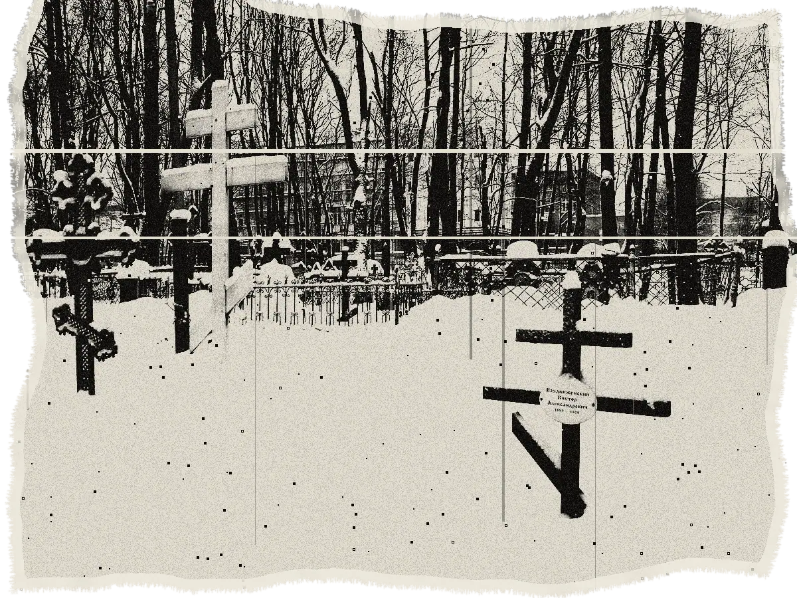

F / 03
The roof over the cross
The golubets — a cross sheltered by a small gabled roof, sometimes enclosed as a little house — is a grave form that can still be seen in Russian cemeteries. The word had a second meaning, a built-in box beside the stove in a peasant house. The roof protects the wood; it also makes the cross into a building, and the grave into a dwelling.
Architectural and ethnographical surveys across the Russian North (Permilovskaya 2013, pp. 312–330; Belova and Levkievskaya 2004, pp. 264–266) document the roofed cross (krest-golubets) not as an isolated oddity, but as an established micro-architectural tradition across the Mezen, Pinega, Pechora, and White Sea Pomor basins, as well as in remote Siberian settlements. In these regions, the timber roof—complete with miniature gabled rafters (pričeliny) and carved bargeboards—directly mirrored the roof of the northern log izba. The grave was conceived in peasant culture as the 'eternal house' (vechnoe zhilishche), and the roof sheltered both the wood against harsh Arctic snow and the small carved or painted icon set in the kiyot under the gable. Preserved predominantly by Old Believers who defied Synodal bans, the form continued in active use well into the mid-twentieth century.
Barsov saw small houses with a roof and windows over some graves in his childhood, and in Novgorod province, in Cherepovets district, for example at Prechistaya in Andoga (1872, p. 307). The same page records that those who took part in a burial touched the stove with a hand on coming home. His note is one district; it does not give the word golubets and does not say how common the houses were.
F / 04
Novodevichy Cemetery, Moscow
Novodevichy Cemetery in Moscow grew up around the convent founded in the sixteenth century, as the traditional burial place of the church and noble elite of Moscow, and in the nineteenth century of the intelligentsia and merchants. A new cemetery was opened south of the convent wall in 1898, enclosed in 1898–1904 and extended in 1949. An encyclopedia entry, seen only as a search excerpt, names it as the burial place of well-known Soviet state, party and military figures, scholars, writers and actors. Rozanov, writing of the 1770s–80s, names Novodevichy among the four Moscow monasteries (with Spaso-Andronikov, Novospassky and Donskoy) where burial continued after the new cemeteries were opened.
Two examples recorded in the photographs used by this atlas: the grave of Ilya Ilf, and a double monument for the writer A. N. Stepanov and his wife, designed — according to the photographer’s description — as two ships on a dark sea. The atlas repeats that description as a description, not as a documented intention of the family.
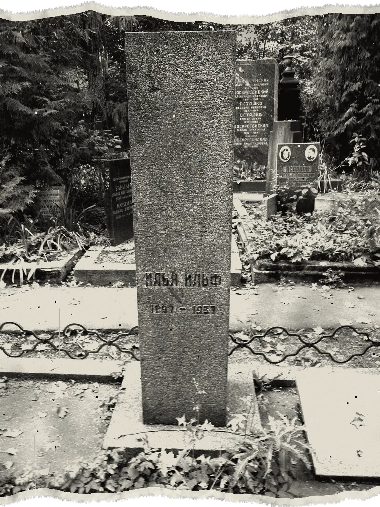


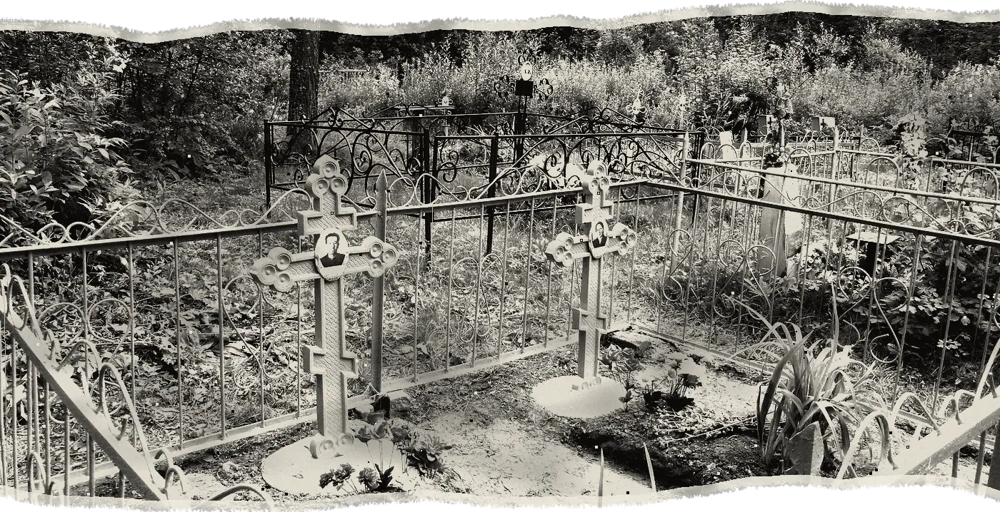
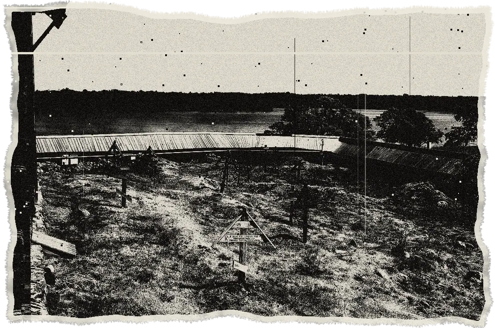
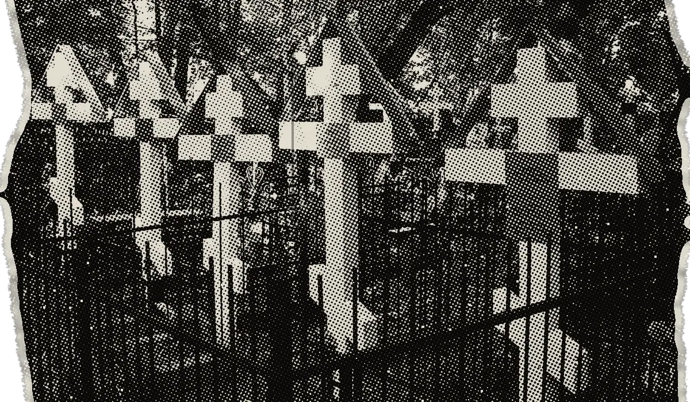
F / 11
Tobolsk: closed ground, an old man’s request, two infants
The law of the cemetery reached Siberia as paperwork. A Senate decree of 24 December 1771 banned burial at town parish churches and called for new ground outside the town; the Tobolsk consistory applied it to villages of its eparchy, and in 1783 the parish of Abalak was moved to Preobrazhenskoye while the old church complex became a monastery. Lay burial at Abalak stopped. In August 1815, though, a peasant of Abalak volost, Alexey Vakhrushev, was buried inside the monastery enclosure after a service by a priest of the Preobrazhenskaya church, without the knowledge of the local authorities. The abbot said the elderly man, ill with tuberculosis and asthma, had asked for it before he died. The gubernia board wanted exhumation; more than twenty days had passed, and sanitary risk prevented it. A Synod decree of 12 April 1833 later allowed burial in closed cemeteries in exceptional cases, such as priests and large donors, and in 1912–13 the consistory reviewed 19 petitions for burial within church or monastery enclosures and refused one.
The law also had a smaller edge. Stillborn and unbaptized children could lie in general cemeteries but without rites or commemoration. At the abandoned village of Yarkova, in the Tobolsk district, archaeologists in 2015 opened a 50 m² trench in a garden plot beside a cliff and found two children’s burials of the mid-nineteenth to early twentieth century, in logs, shallow, with twisted cords and some factory cloth. With no other graves nearby, the authors read it as a household plot for unbaptized infants. That is their reading, from two burials, and the sources do not say which of two long-settled families used it.
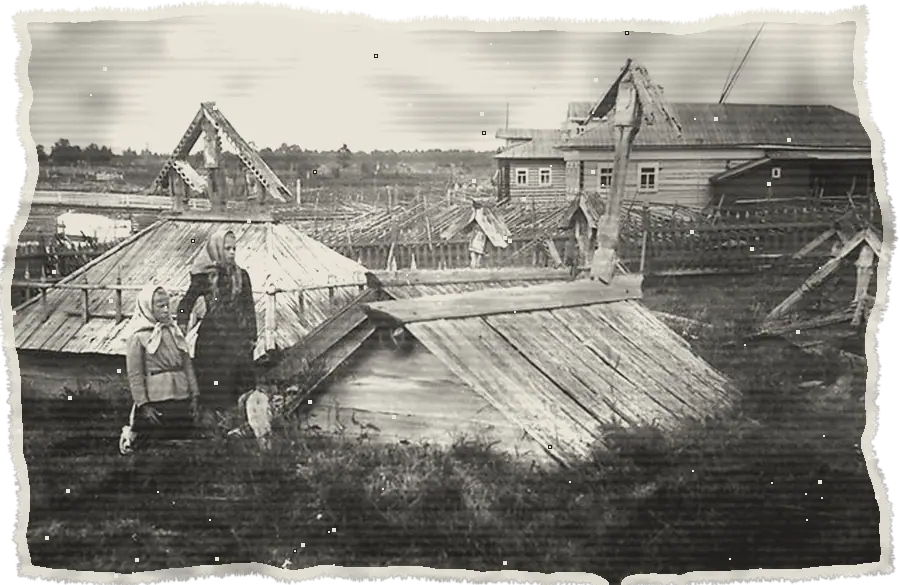
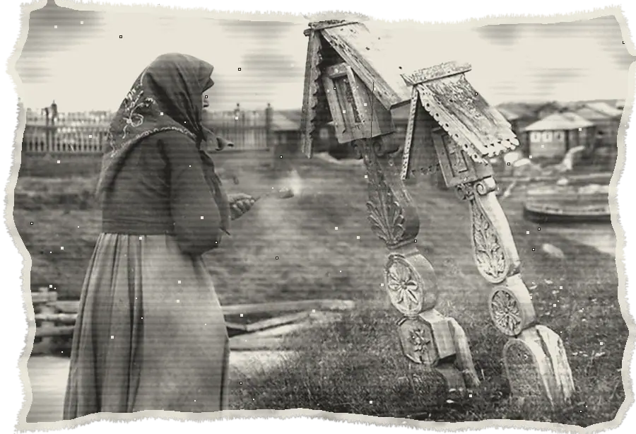
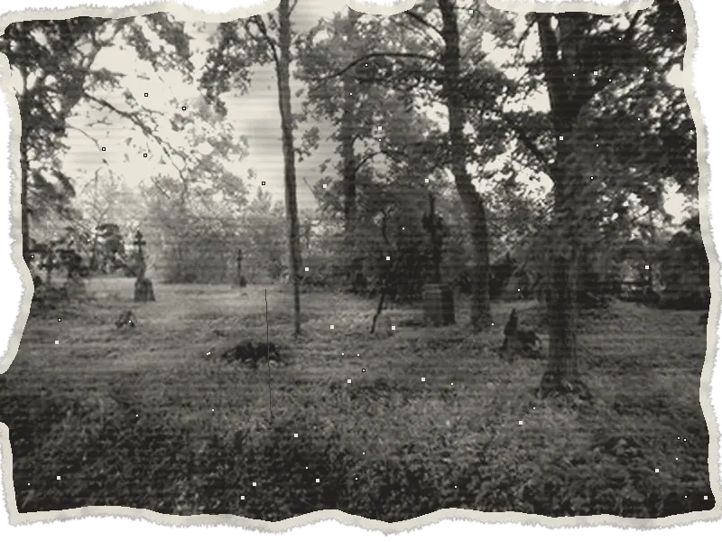
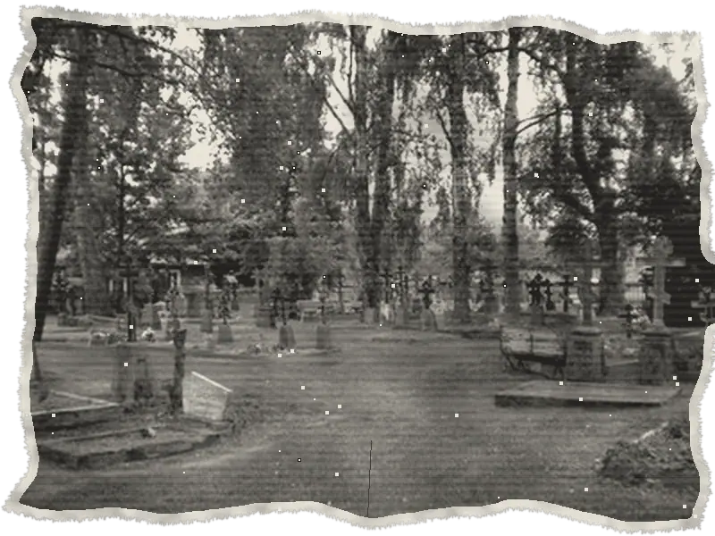
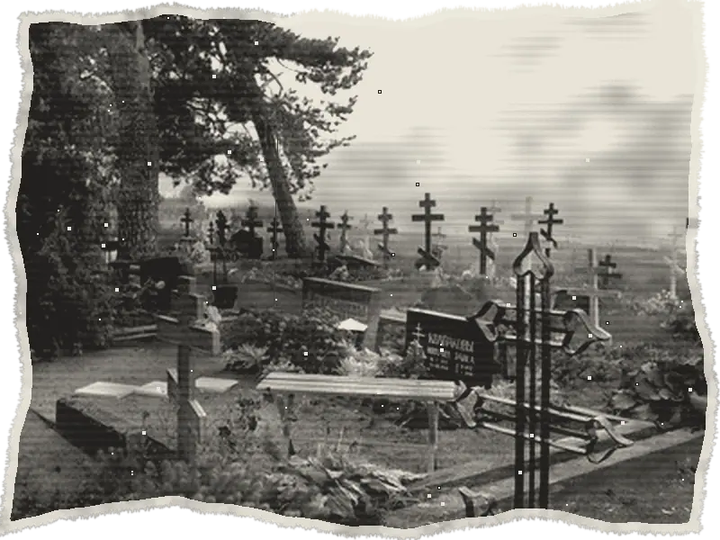
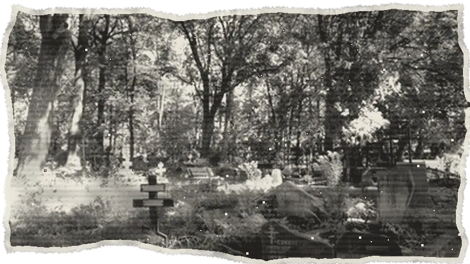
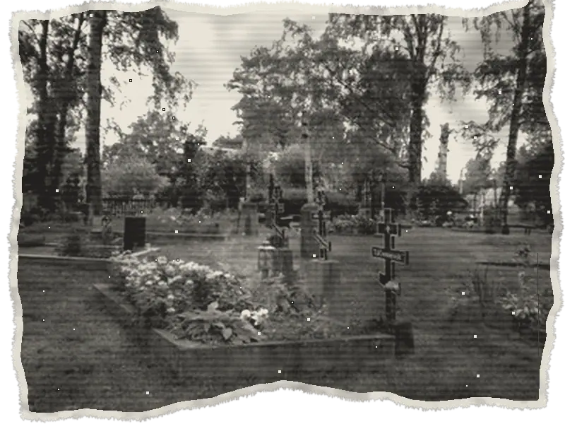
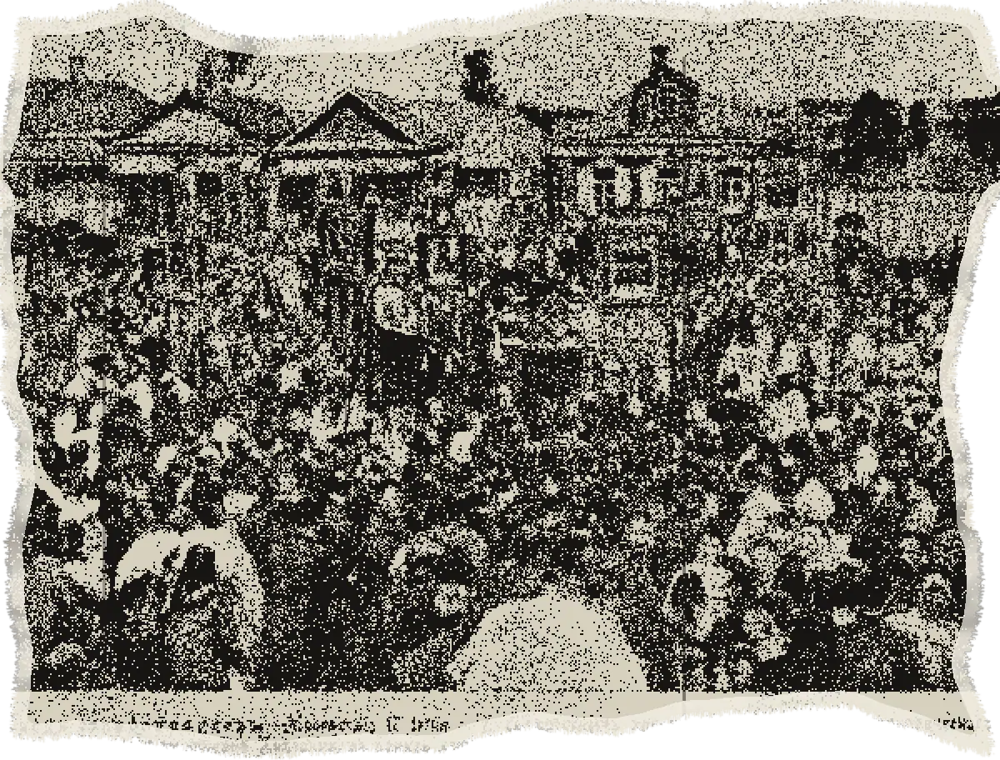
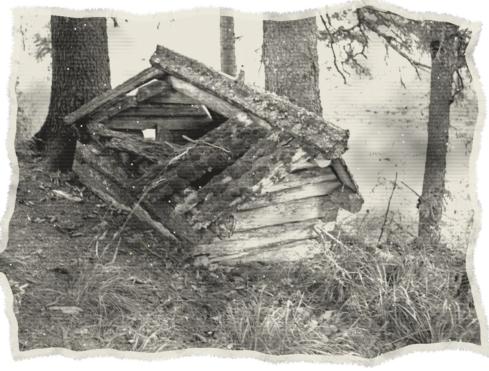
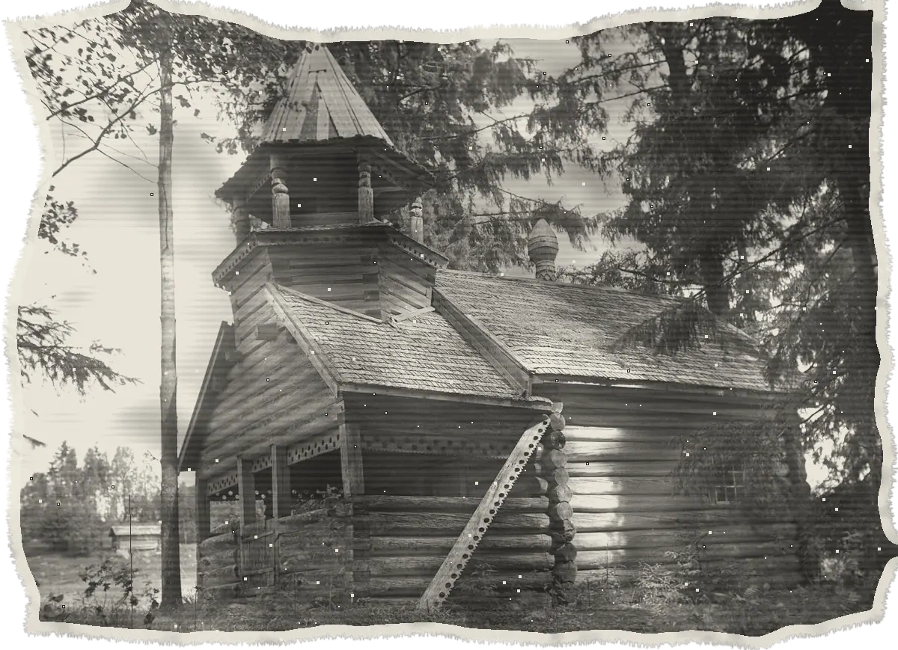
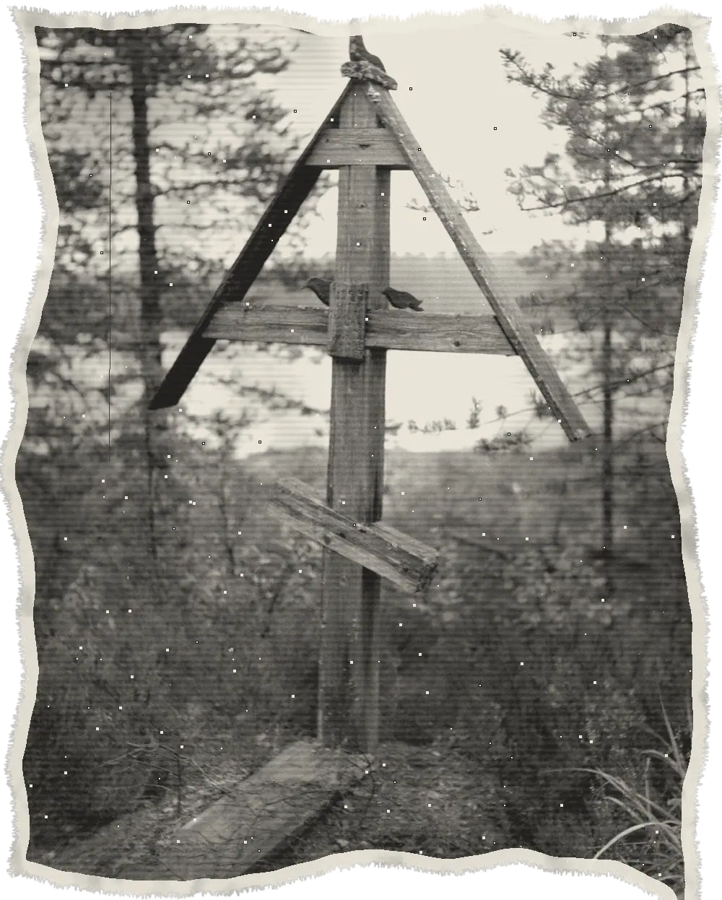
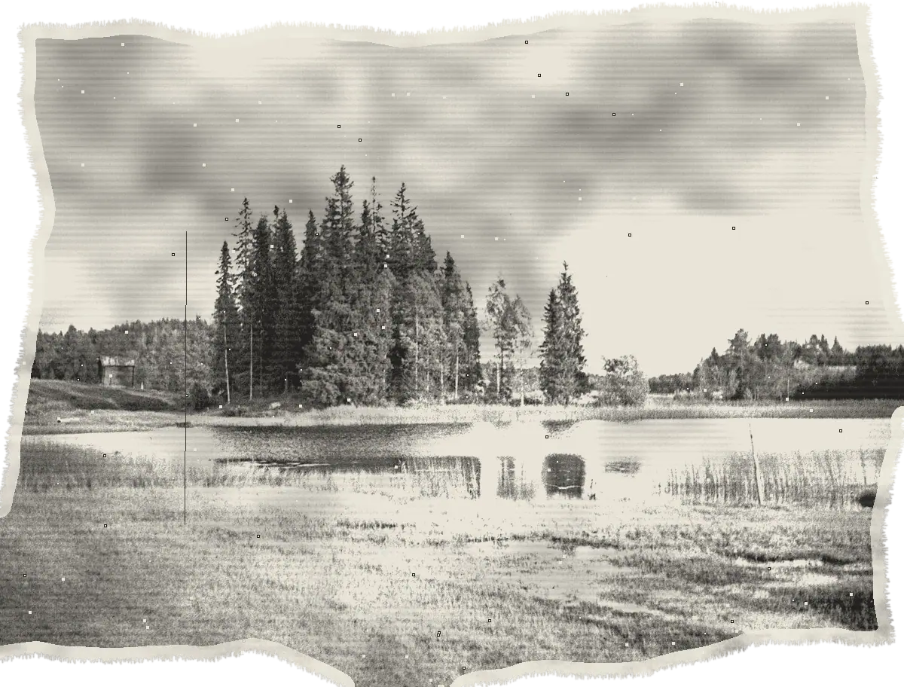
Text
Whether I wander along noisy streets…
Брожу ли я вдоль улиц шумных…
Original
English translation
Pushkin wrote the poem on 26 December 1829; it was published in Literaturnaya gazeta on 6 January 1830. It is a lyric meditation, not a funeral text. The speaker moves through a street, a church, a crowd of youths, an oak, an infant, and ends at the entrance to the grave, where young life continues and indifferent nature shines.
The poem is used in the plate on the grave because it states the grave as a place that is both personal («closer to my dear native place») and impersonal («it is all the same to the insensible body»). The «eternal vaults» are a literary image, not a description of a cemetery. The text follows the modern-spelling edition cited; the source page records the pre-reform variants.
- предел
- Limit, boundary, region; here rendered as «native place».
- вечны своды
- Eternal vaults; the grave or the underworld, a literary image.
- равнодушная природа
- Indifferent nature; the poem's final antithesis to human grief.
Source A. S. Pushkin, «Брожу ли я вдоль улиц шумных…» (26 December 1829; published 6 January 1830), 32 lines. · open source
Rights Public domain. Pushkin died in 1837; the poem was published in 1830. Public domain in Russia and in the United States. The text follows the Wikisource transcription based on Sobranie sochinenii v 10 tomakh (1956–62).
Text
Inscription on the tomb of A. V. Suvorov
Надпись на надгробии А. В. Суворова
Original
English translation
Suvorov died in 1800 and was buried in the Annunciation Church of the Alexander Nevsky Lavra in St Petersburg. The slab carries only these three words. The attribution to Derzhavin rests on an anecdote recorded in the commentary to Nikolai Gnedich's poem «Inscription to Suvorov's Tomb»: Suvorov asked Derzhavin what epitaph he would write, and Derzhavin replied that three words were enough.
The original slab was later replaced by a longer one with titles, but Suvorov's wish prevailed and the simple inscription was restored. The atlas prints the inscription as an inscription, not as a poem. The exact history of the slab is summarized in the Lavra and museum notices cited.
- Здесь лежит
- Here lies; the inscription is a complete sentence, not a fragment.
Source Inscription on the tomb of A. V. Suvorov, Annunciation Church, Alexander Nevsky Lavra, St Petersburg, 1800. · open source
Rights Public domain. The inscription was carved in 1800. The text is a short factual phrase and is public domain in every relevant jurisdiction. The attribution to Derzhavin rests on the anecdote recorded in the commentary to Gnedich's poem; the inscription itself is treated as an object, not as a literary work.
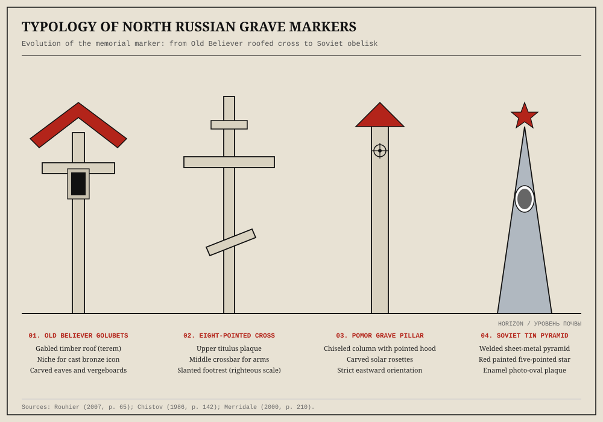
Apparatus sources · related plates · terms
Sources for this plate
- pravenc-nadgrobie Pravoslavnaia entsiklopediia (Orthodox Encyclopedia) — Nadgrobie (2000– (ongoing))
- vagankovo Mos.ru (official portal of the city of Moscow) — Material on the history of Vagankovo Cemetery (n.d.)
- danilov2018 Danilov, P. G. — Погребальная практика русского населения Тобольского Прииртышья в XVIII—XIX веках: случаи отступления от официального законодательства (2018)
- rozanov-moscow-cemeteries N. P. Rozanov — O moskovskikh gorodskikh kladbishchakh (1868 (offprint from the June issue of Dushepoleznoe chtenie, 1868; censor’s permission dated 8 June 1868))
- rambler-golubtsy Kirillitsa (Rambler Weekend, unsigned) — «Голубцы»: что так называли русские (n.d.)
- novodevichy-encyclopedia Unidentified encyclopedia entry (booksite.ru full-text page) — Novodevich’e kladbishche (headword, Moscow) (n.d.)
- barsov1872 Barsov, Elpidifor Vasil’evich — Prichitaniia Severnogo kraia (1872–1886)
- pushkin1830 Pushkin, Alexander Sergeevich — Brozhu li ya vdol’ ulits shumnykh… (1829 (published 1830))
- suvorov-epitaph Inscription on the tomb of A. V. Suvorov — Zdes’ lezhit Suvorov (1800)
- permilovskaya2013 Permilovskaya, Anna B. — Kul'turnye smysly narodnoi arkhitektury Russkogo Severa [Cultural Meanings of Folk Architecture of the Russian North] (2013)
- belova-levkievskaya2004 Belova, Olga V.; Levkievskaya, Elena E. — Mogila [The Grave] (2004)
URLs, access dates and limitations are in the bibliography.
Related plates
Terms in this plate
Citation
Archaeology of Russian Death. Plate F: THE GRAVE. From churchyard to cemetery, and the architecture of a name // An Atlas of Material Culture and Ethnography. 2026. URL: https://DmitryLeLeE.github.io/rus_death/plates/f-grave.html.